Part A.1: Shoot the Pictures
To take photos for this project, I used my iPhone camera, capturing the Gateway building and also the grass area outside of Moffitt library. I kept the camera at one fixed spot and only rotated it between shots, since that's what makes the photos in each pair related by a single homography. Between the photos I took, I kept about 50–70% overlap between shots to maximize my results.
Gateway
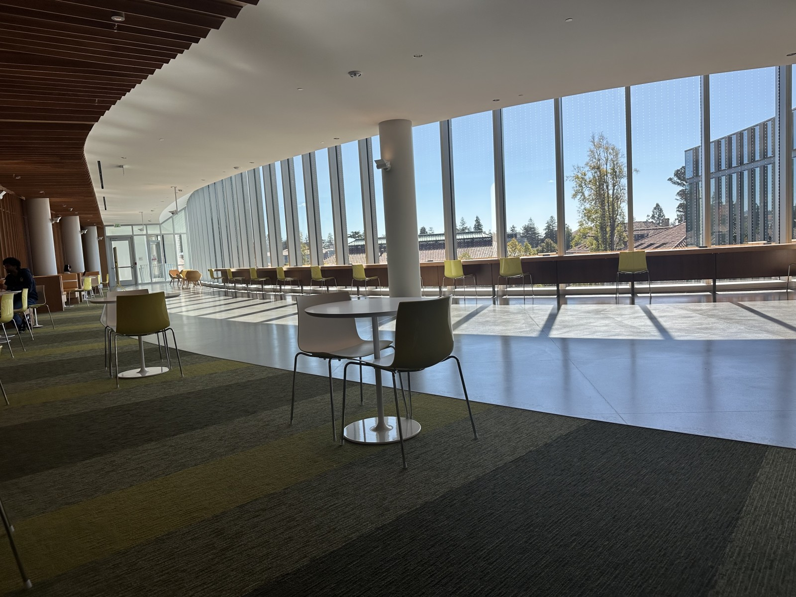
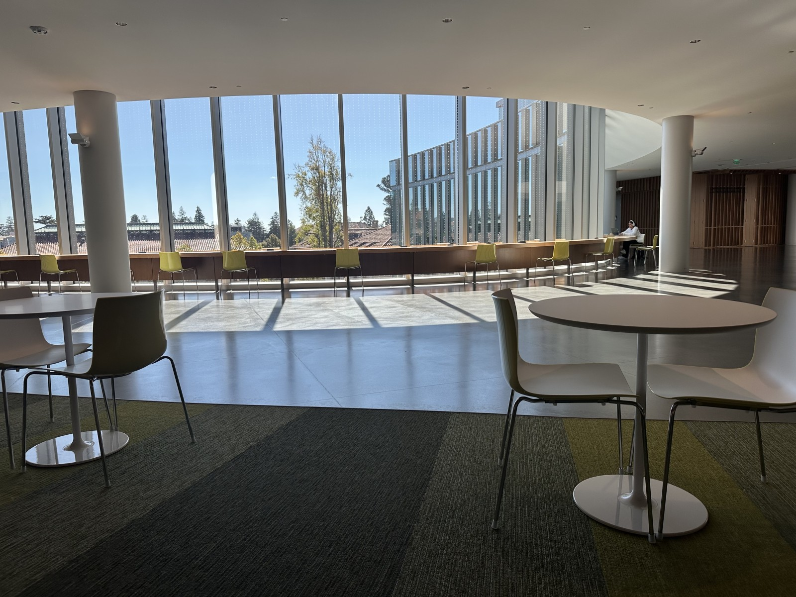
Grass
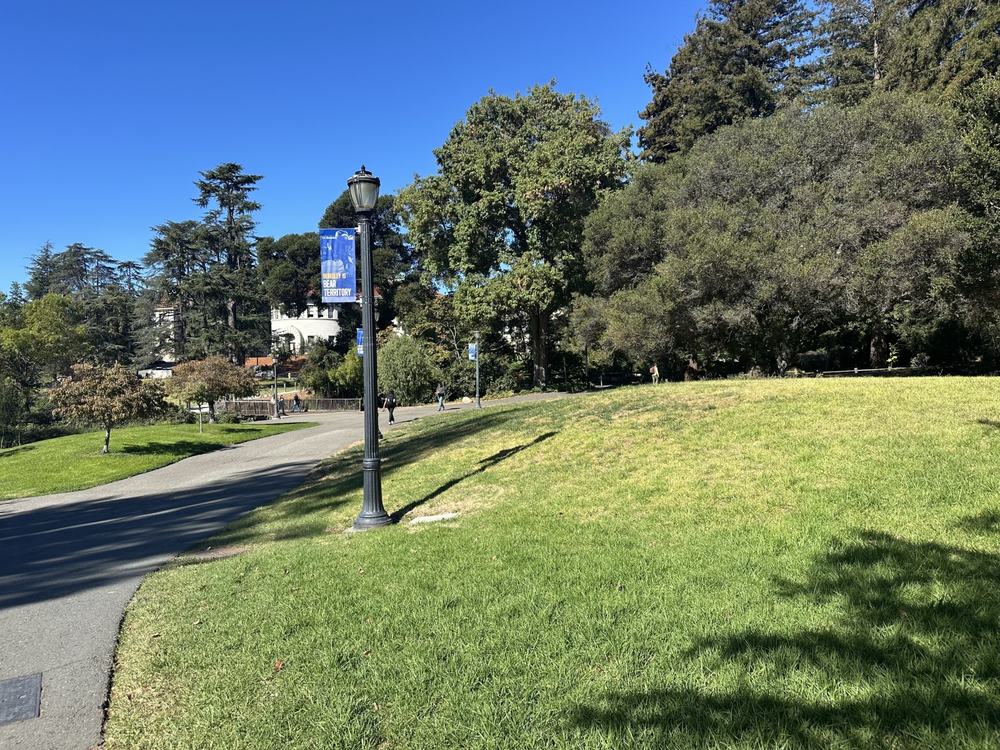
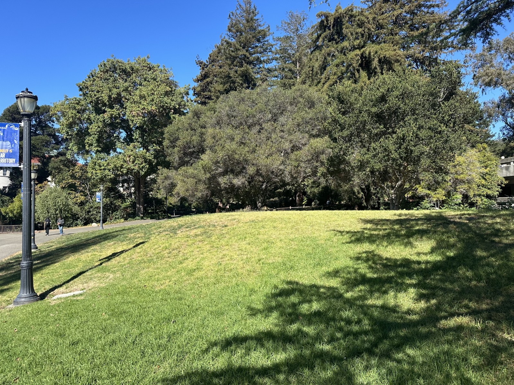
Part A.2: Recover Homographies
For this part, to recover homographies, I clicked on 10 correspondences on the Gateway pair of photos. I made sure to make all my clicks in the same order of both images because computeH pairs them by index, point $i$ in image 1 with point $i$ in image 2, so if the order is off, the equations just pair up points that don't actually match, and the recovered H comes out wrong. I decided to make objects like the security camera on the pillar, chair backs at the counter, the tree top, window frame tops, and the counter edge my points rather than a random spot on the floor or ceiling, since those were harder to match and more unreliable.
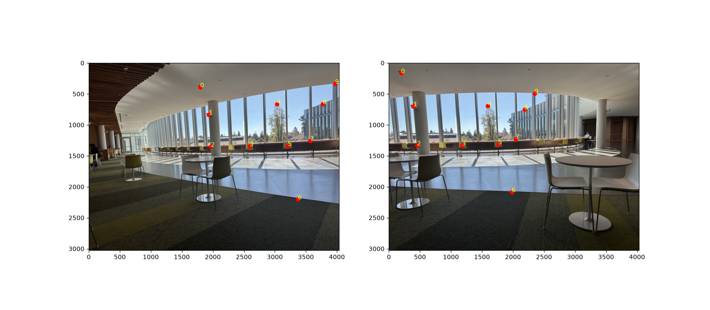
H takes each (x, y) point in image 1 and maps it to the matching (x', y') in image 2. Since the bottom-right entry is fixed to 1, there are really only 8 unknowns to solve for. Every correspondence I click gives 2 equations, so with 10 points I end up with a 20 × 8 system, $Ah = b$, more equations than unknowns. I solved that overdetermined system with least squares.
$$\begin{bmatrix} x & y & 1 & 0 & 0 & 0 & -x x' & -y x' \\ 0 & 0 & 0 & x & y & 1 & -x y' & -y y' \end{bmatrix} \begin{bmatrix} h_1 \\ h_2 \\ \vdots \\ h_8 \end{bmatrix} = \begin{bmatrix} x' \\ y' \end{bmatrix}$$
The recovered H I got, rounded, was:
$$H = \begin{bmatrix} 2.0810 & 0.0697 & -3491.73 \\ 0.3796 & 1.6936 & -1061.47 \\ 2.68\times10^{-4} & -8.9\times10^{-6} & 1.00 \end{bmatrix}$$
Part A.3: Warp the Images
For inverse warping, I warped the 4 corners through H to get the bounding box, then sent every output pixel back through H⁻¹ to find its source location to leave no holes. Some output pixels land outside the source image though, so I used an alpha mask to mark which output pixels actually have a source pixel; the ones that don't just stay black. Nearest neighbor rounds to the closest pixel, while bilinear takes a distance-weighted average of the 4 surrounding pixels, which smooths out the blocky, stair-stepped edges that nearest neighbor leaves behind.
Rectification: iPad
I clicked the iPad's screen corners and mapped them to a 2360 × 1640 rectangle, the iPad Air's actual screen resolution.
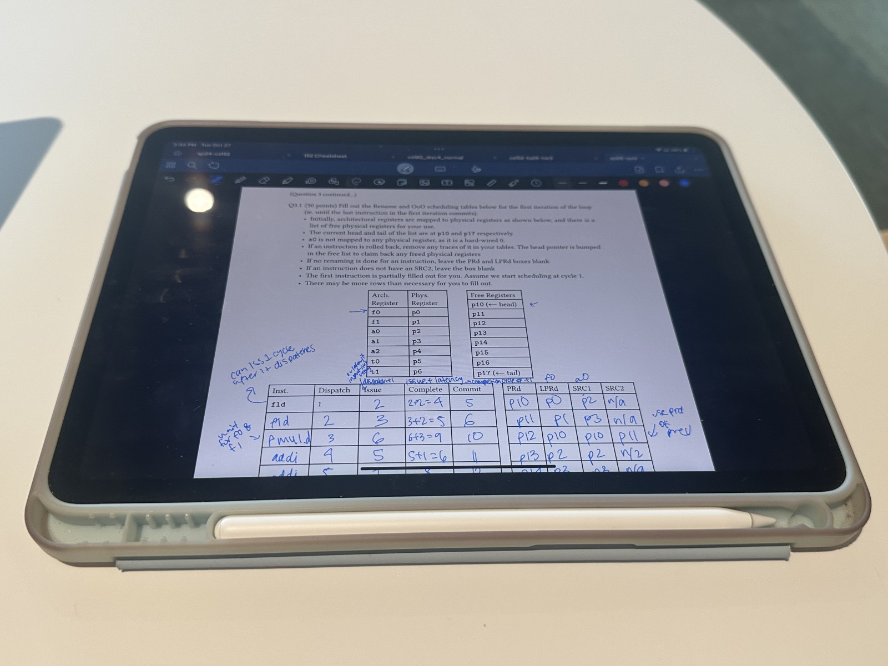
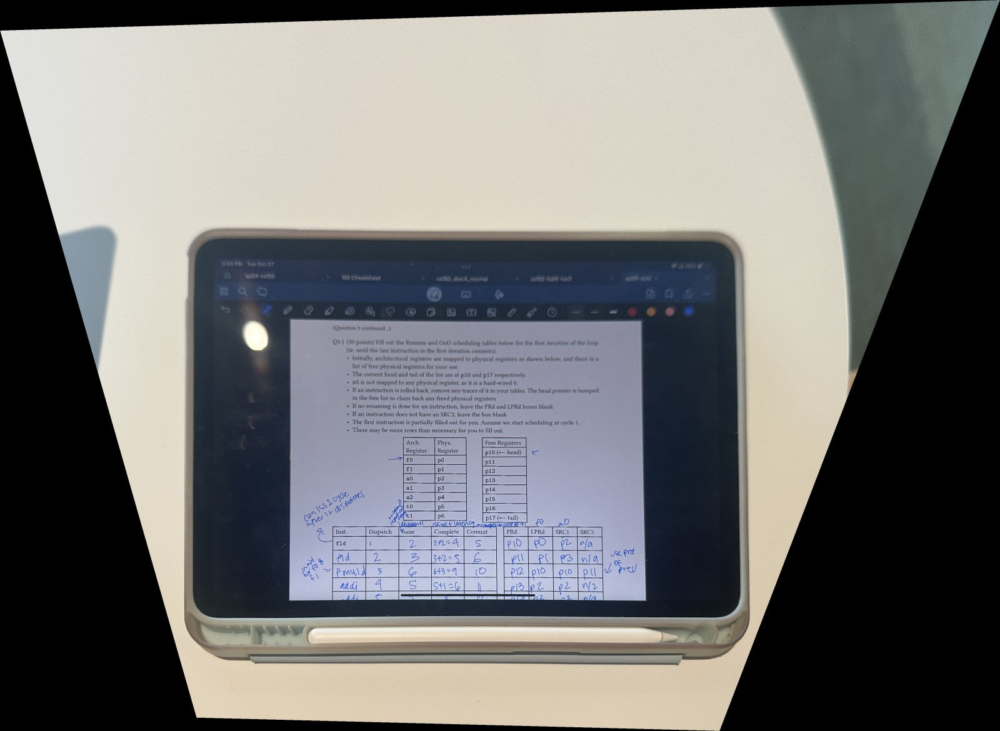
Rectification: Gum
I clicked the gum package's top-face corners and mapped them to a 2400 × 2100 rectangle, matching its actual 4" × 3.5" ratio.
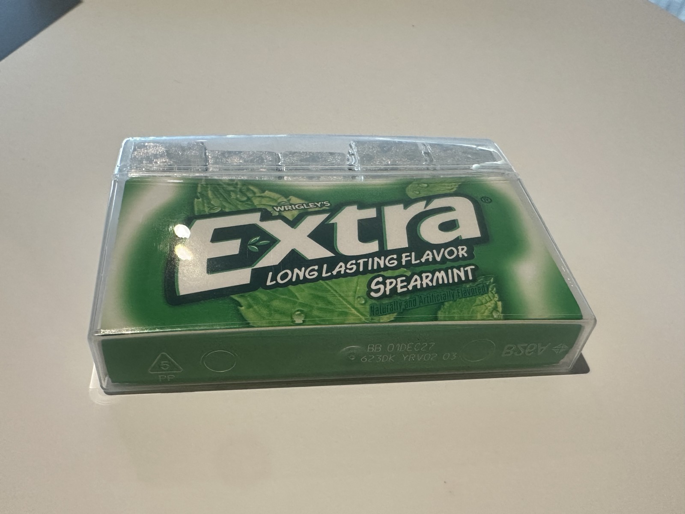
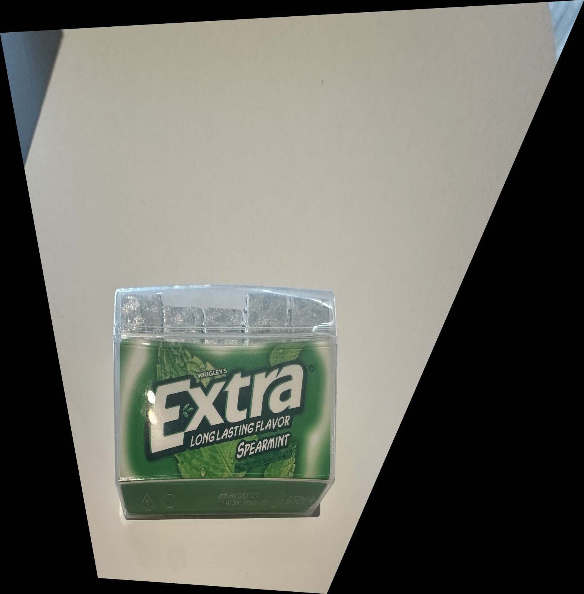
Timing-wise, the iPad ran in 1.63s with nearest neighbor and 2.95s with bilinear, while the gum took 4.91s and 9.65s. Bilinear reads 4 pixels per output pixel instead of 1, so it lands at roughly double the runtime for both. The gum pair is slower overall mainly because the output canvas is so much bigger, roughly 6500 × 6600 since the table stretches far into the background, about 3x the pixel count of the iPad canvas, which lines up with it taking about 3x as long. Quality-wise, I had to zoom in to actually see a difference, since at full size the two methods look basically identical. Zoomed in, nearest neighbor shows stair-stepped edges, most obvious on the gum logo's diagonal stripes and a little on the iPad's table lines, while bilinear comes out smooth but a touch softer. So it's speed vs. sharpness: nearest neighbor wins on time, bilinear wins on how clean the result looks.
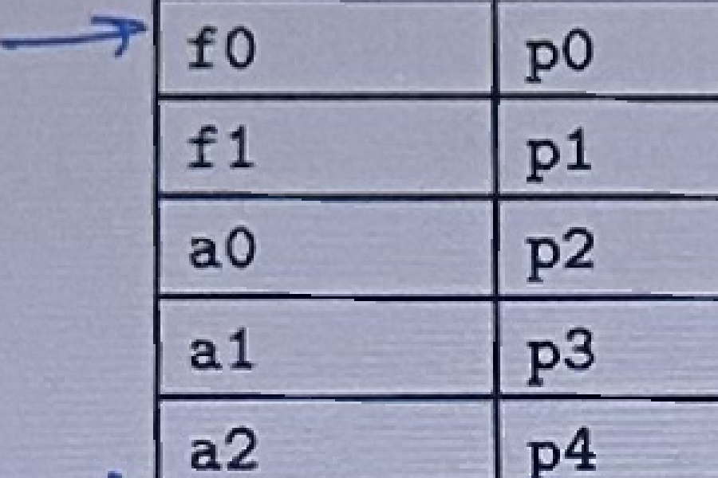
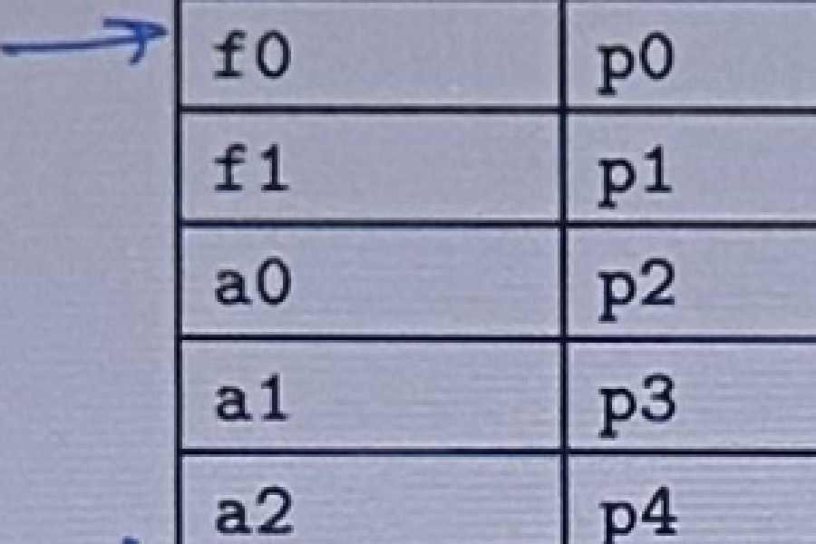
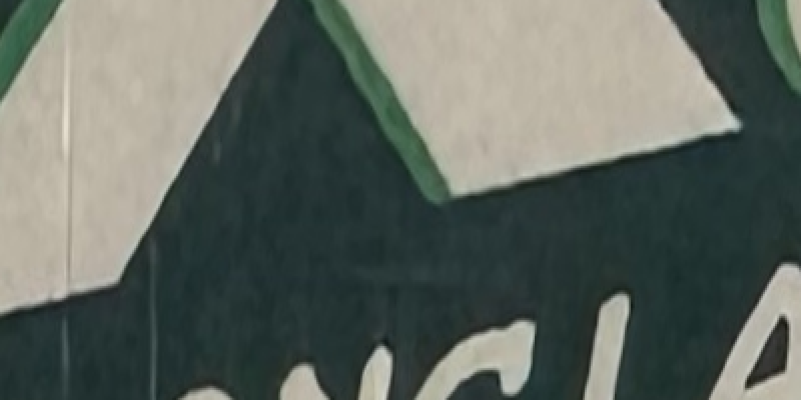
Part A.4: Blend the Images into a Mosaic
For this part, I kept image 2 fixed and warped image 1 into its frame using bilinear inverse warping. The canvas size comes from image 1's warped corners together with image 2's extent, both at once, not one after the other. Each image gets a weight map that's 1 at its center and falls off linearly to 0 toward the edges (an x falloff times a y falloff), and I warp image 1's weight map right along with it as an extra channel. The final mosaic is just the weighted average, $\Sigma(w_i \cdot I_i) / \Sigma w_i$, so wherever the two images overlap, they blend together instead of one flatly overwriting the other.
Gateway
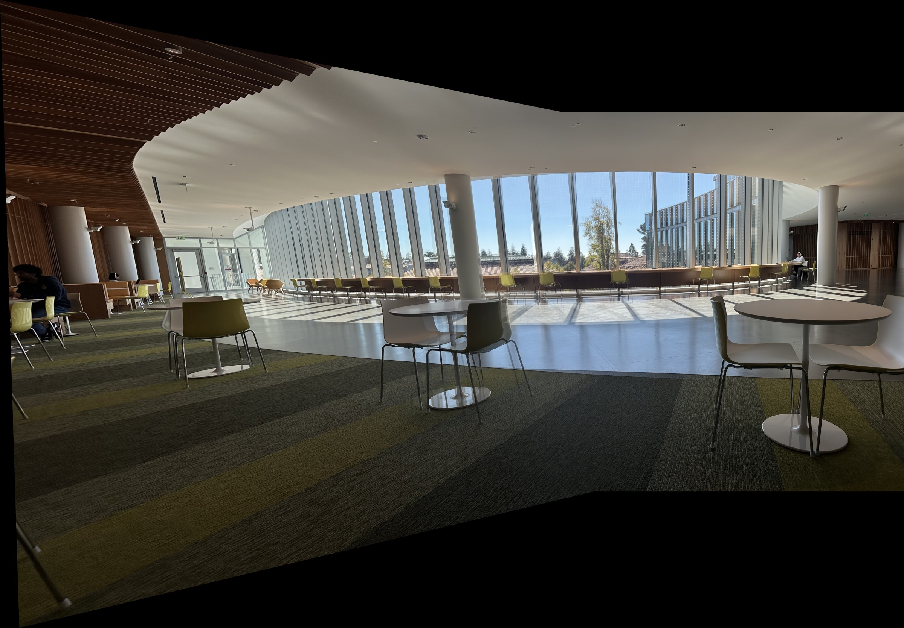
There's some ghosting on the near table and chairs, probably from parallax, b/c the camera's center of projection probably shifted slightly between shots, so nearby objects like the table moved more than the background and couldn't be aligned by one homography.
Grass
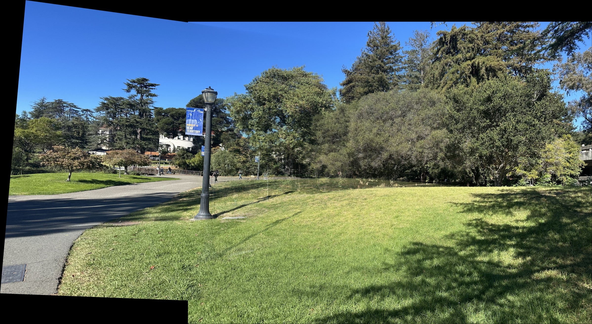
There's also some faint ghosting, a doubled outline, in the middle around the trees, because there were fewer sharp features for me to use as points there, even though I aligned points to be as accurate as I could.
Memorial Glade
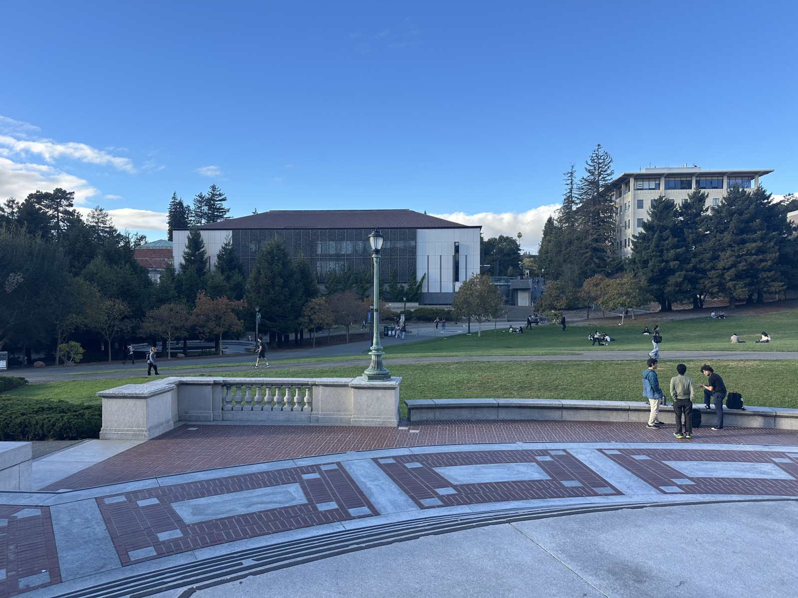
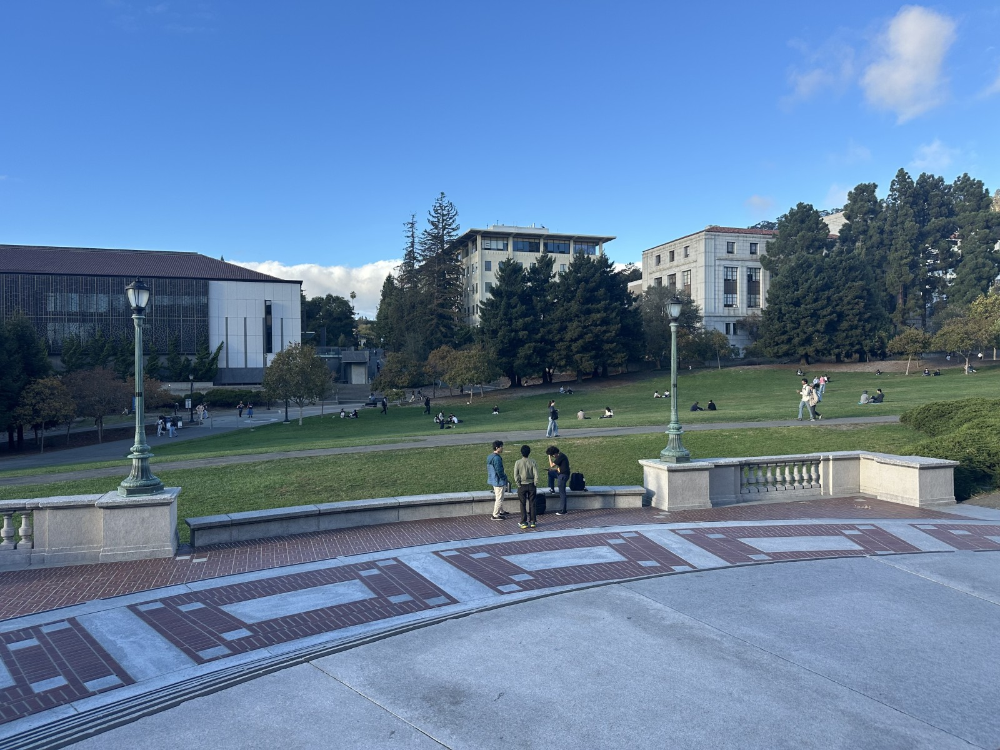
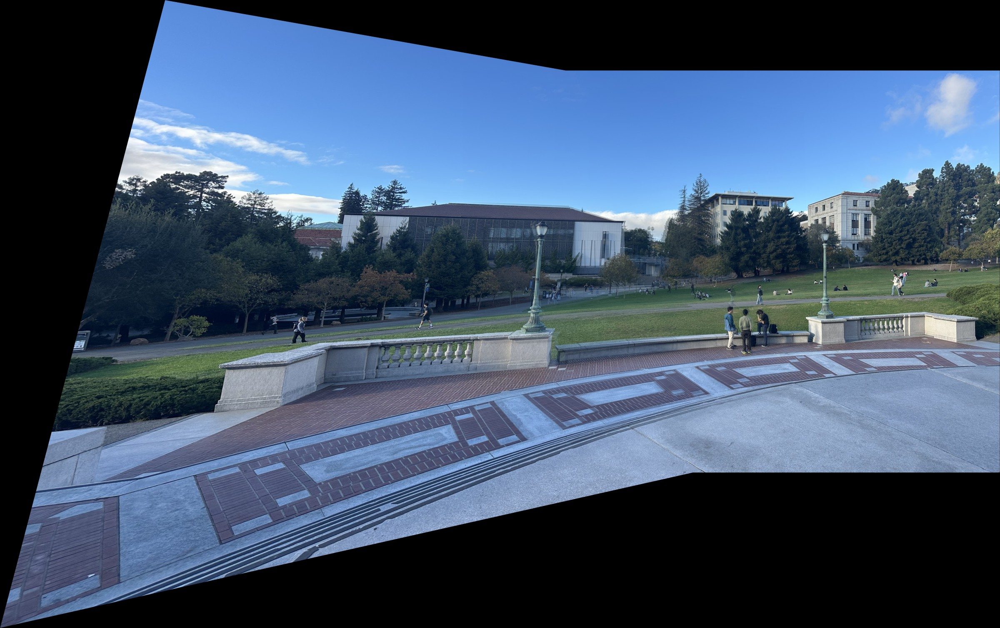
The glade mosaic turned out the best of the three because there were many sharp building corners that I could click and use as points. There were some people far back in the glade who moved between the two shots though, so they show up as see-through ghosts in the overlap.
A challenge I had at first was the clicking for corresponding points because I had to decide areas that are visible for both the first image and second, which took me multiple attempts to find the most optimal points to use for the mosaics.
Part B: Feature Matching for Autostitching
Part B.1: Harris Corner Detection
For B.1, I ran harris.py at a single scale, with no sub-pixel refinement, on a grayscale version of the image. I first resized each image to ¼ size before detecting corners, since full-resolution photos give too many corners (ANMS compares every corner against every other one!). I felt like there were a lot of false matches, so to fix those, I implemented thresholding, where I'm keeping only corners that are above 1% of the strongest. For ANMS, each corner's radius is its distance to the nearest significantly stronger corner ($c_{robust} = 0.9$). I kept the 500 corners with the largest radii.
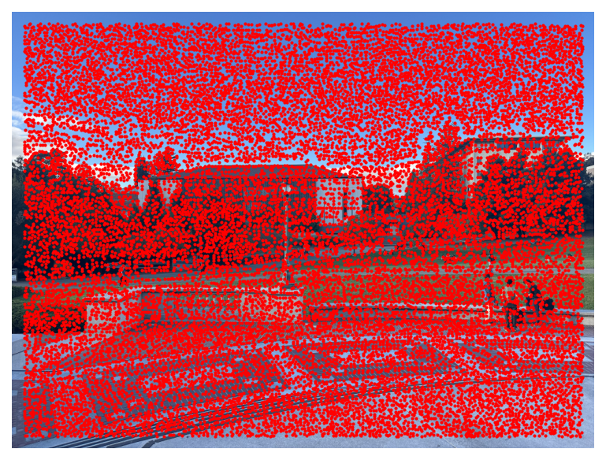
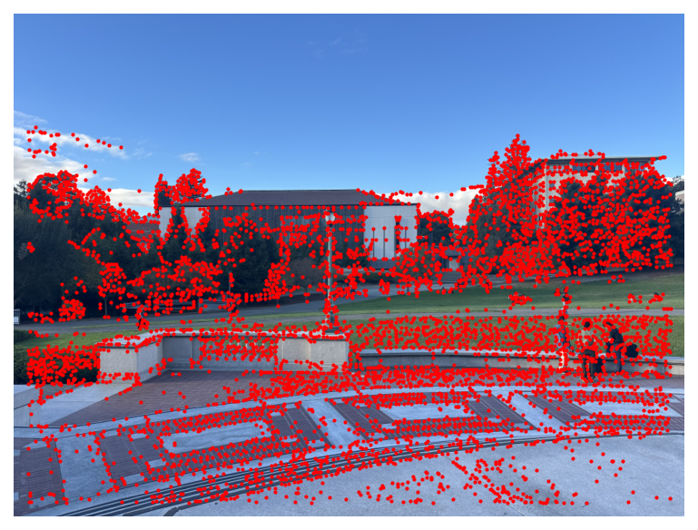
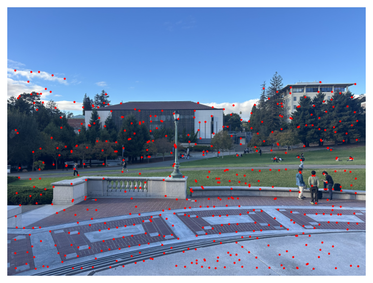
Before thresholding, corners cover nearly the entire image, meaning that they include the weaker and noisier parts too, like the sky. After thresholding, the sky is basically empty (just a few corners on the cloud edges), and the corners stick to textured areas like the trees and pavement. With ANMS, the 500 points spread evenly and mostly landed on real structure like buildings, grass, etc, with only a few on the clouds and none in the open sky. Spreading them out is important b/c crowded corners can miss the overlap between images entirely.
Part B.2: Feature Descriptor Extraction
I blurred the grayscale image with a Gaussian (σ = 2.5), then took every 5th pixel of a 40 × 40 window around each corner, giving an 8 × 8 patch. The blur avoids aliasing from that sampling and makes the descriptor more tolerant of small errors in corner position. The patches are axis-aligned, with no rotation. To normalize each one, I subtracted the mean and divided by the standard deviation. This ensures that brightness and contrast differences between photos do not affect the end result.
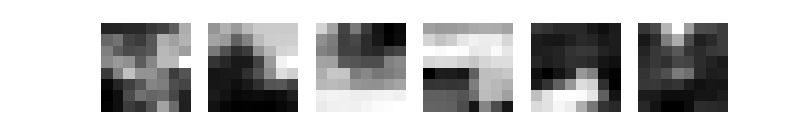
These 6 patches come from the first 6 ANMS corners, the ones with the largest suppression radius. Each shows clear structure, like edges and corners (even though, at low frequency, they appear more blurry/block-like from sampling).
Part B.3: Feature Matching
For each descriptor in image 1, I found its nearest (1-NN) and second-nearest (2-NN) descriptor in image 2 by squared distance, then kept matches where 1-NN / 2-NN < 0.6 (Lowe's ratio test). A ratio works better than plain distance since correct and incorrect matches overlap a lot by raw distance alone, but separate cleanly once you look at the ratio between them. I used brute-force matching instead of any indexing. Each colored line below connects a matched pair.
Memorial Glade
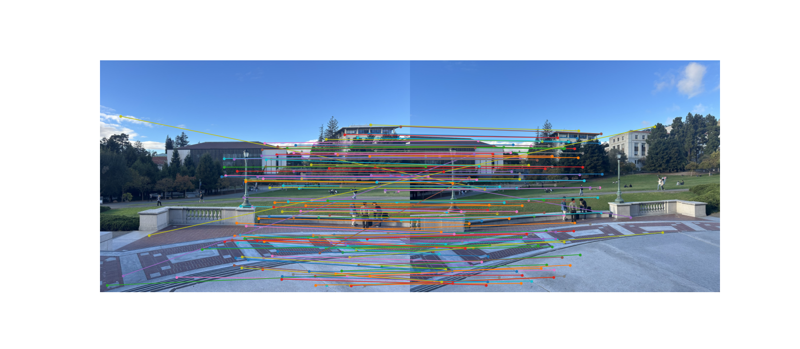
Gateway
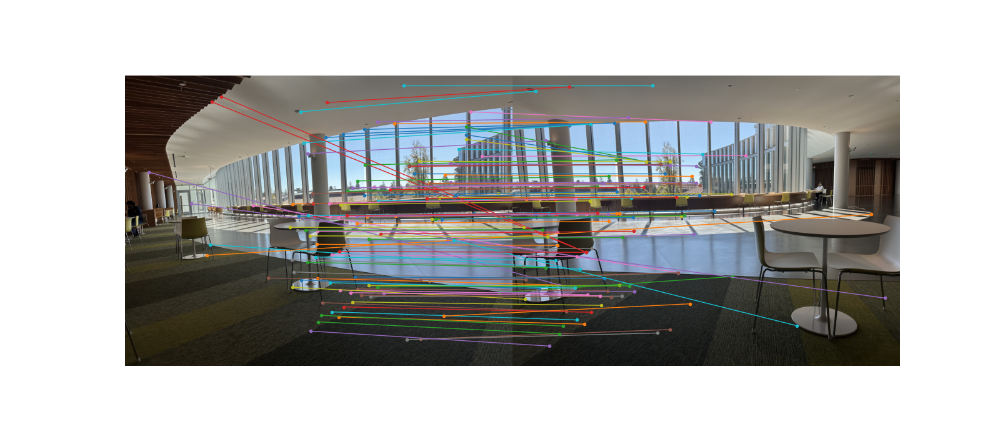
Grass
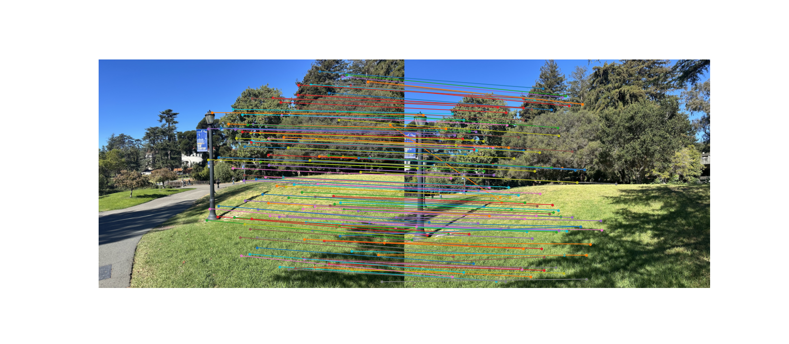
Glade and grass both have mostly parallel lines, showing a consistent shift between the photos. Gateway has the most crossing lines, since the repeated window frames and identical chairs and tables look alike, so some features matched the wrong copy. Every pair still has a few outlier lines too, like the long diagonals from the railing in glade and from the ceiling and floor in gateway. Using RANSAC in the next part definitely helped with this.
Part B.4: RANSAC for Robust Homography
I picked 4 random matches, computed H with my Part A computeH, and counted inliers, matches where H lands within eps pixels of the actual match. I kept the H with the most inliers over 1000 iterations, then recomputed H using all of its inliers. 4 points is the minimum needed since a homography has 8 unknowns and each match gives 2 equations. Since matches were found at ¼ size, I scaled the points by 4 to build the mosaics at full resolution, used eps = 8 full-size pixels, and reused Part A's bilinear warping and feathered blending unchanged.
Gateway
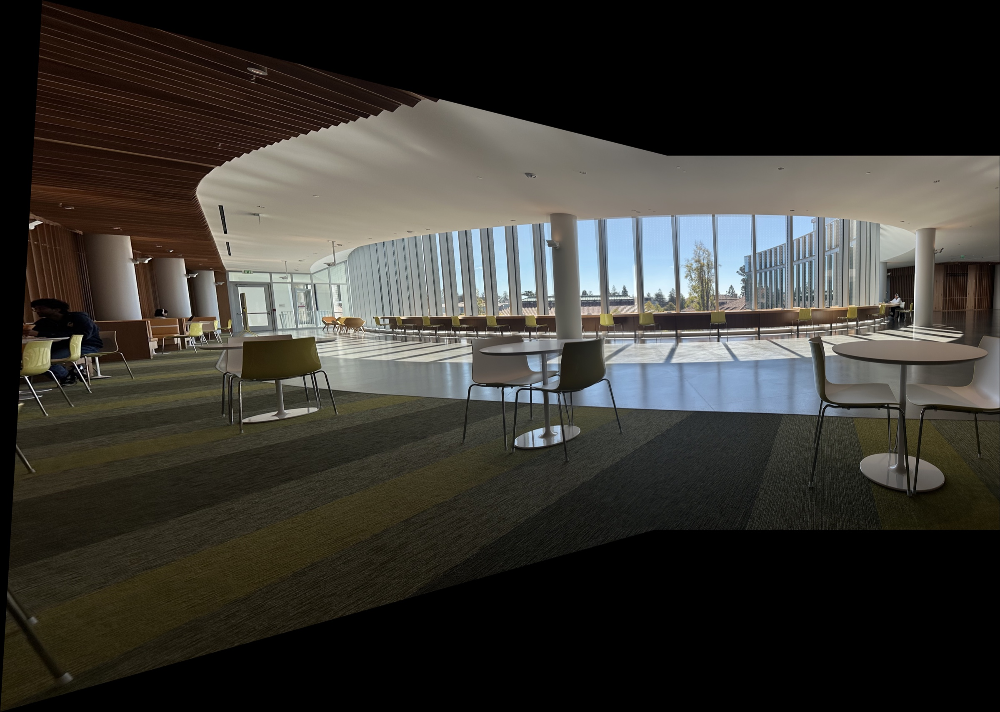
The manual mosaic has clear ghosting on the middle table and chairs, doubled legs and a see-through copy of the chair, while the automatic one is nearly clean there.
Grass
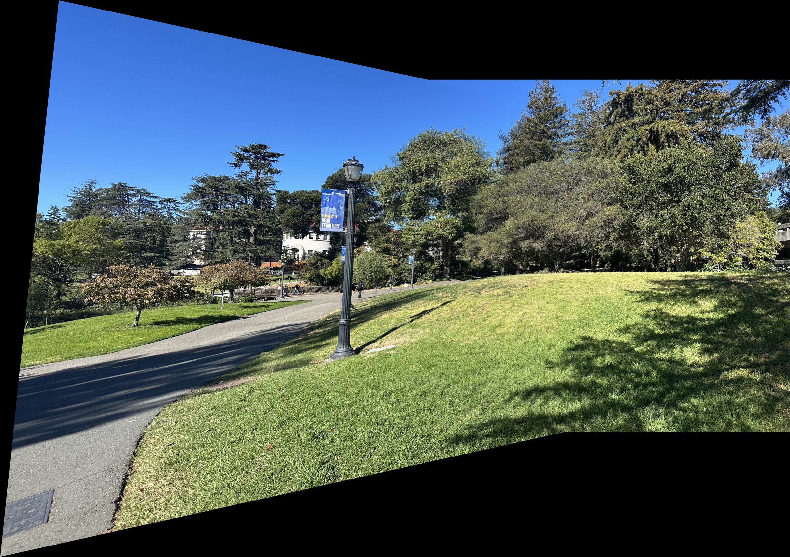
The manual mosaic has a faint blur of some kind with the objects in the frame, while the automatic one looks cleaner. Honestly, I didn't see a difference with the people walking between the 2 images, maybe because they're already kinda far away in the frame. In Part A I said the grass had few sharp features to click, but automatic matching was able to find many matches across the trees and grass. I think it's better than the human eye in terms of optimizing point selection.
Memorial Glade
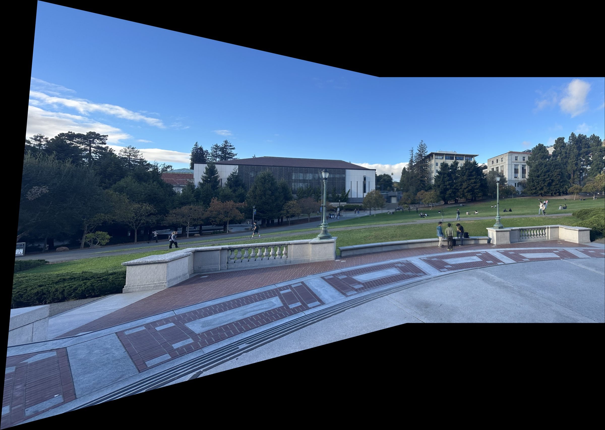
The manual and automatic mosaics look almost equally clean here, since this was already my best manual mosaic (the sharp building corners helped with this). Moving people still show up as see-through ghosts in both versions, but that makes sense because a homography can't fix something that moves between shots.
In general, I noticed that automatic stitching was as good as or better than manual for all 3 pairs. It uses many inliers spread across the overlap instead of my 10 hand clicks, and RANSAC removes the bad ones. The biggest thing I learned was how much better the ratio test is than plain distance, and how much bad matching RANSAC can tolerate. The main challenge is that it can't handle anything that moves between shots, like people.